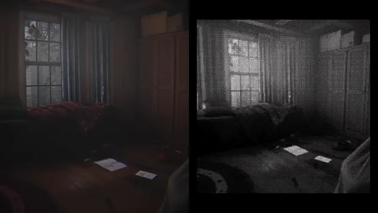
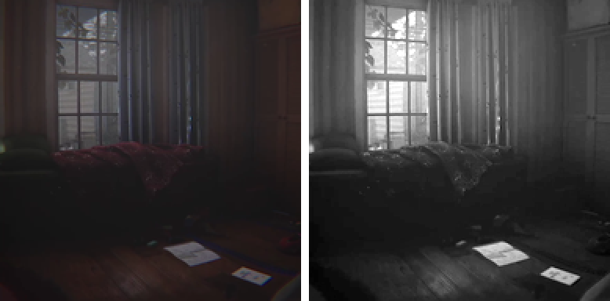
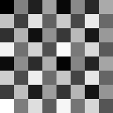
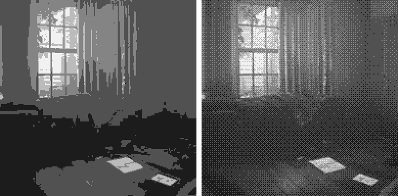

The goal
You carry a Game Boy with a camera and take photos with it throughout the game. We wanted the viewfinder and photos to look like they actually came out of one: tiny, low-res, a few shades of grey, with that dithered look.
It also had to work with our lighting. Dark rooms shouldn't go fully black, and bright windows shouldn't blow everything out to white.
How it works
The Game Boy has its own camera that renders into a small 384 by 384 texture. Right after it renders, a shader rewrites that texture. The viewfinder and the saved photos both use the same texture, so they both get the look for free.
1. Tone
First the image gets softened a little, so jaggy edges don't turn into noise once it's dithered. Then it's turned into brightness only. Lights and windows get toned down, exposure is applied, and bright areas ease off towards white instead of clipping.

2. Dither
If you just round to five shades you get ugly bands. So before rounding, each pixel gets compared against an 8 by 8 Bayer pattern. Pixels next to each other get different thresholds, so in-between shades turn into a checker of two shades, which your eye reads as a smooth gradient.

float bayer = (BAYER[(px.y & 7u) * 8u + (px.x & 7u)] + 0.5) / 64.0;
float q = saturate(floor(lum * 4.0 + bayer) / 4.0);
3. Palette
The five shades map to five colours on the material, so we can tweak the look without touching code. Some story moments swap the palette, and they do it on a copy so the original material stays as is.
The step images were rendered with a Python port of the shader. The clip at the top is straight from the game.